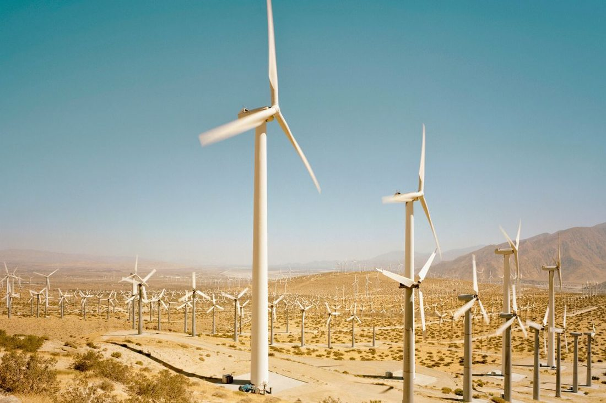
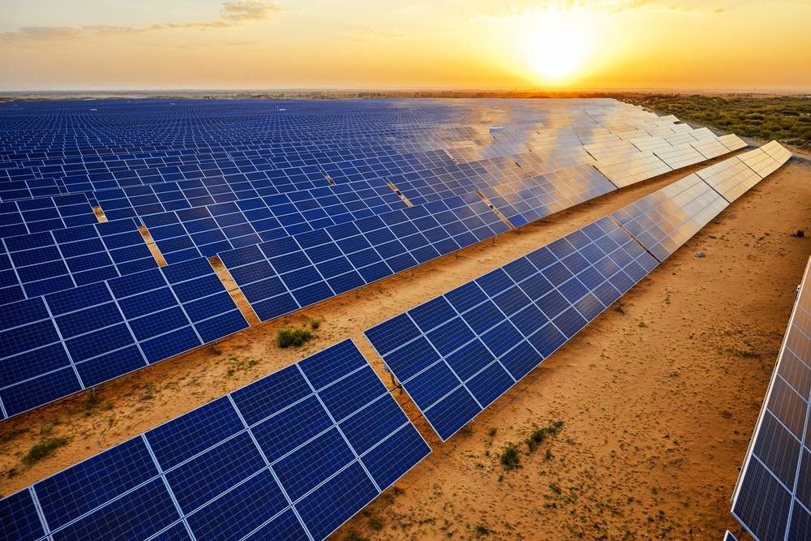
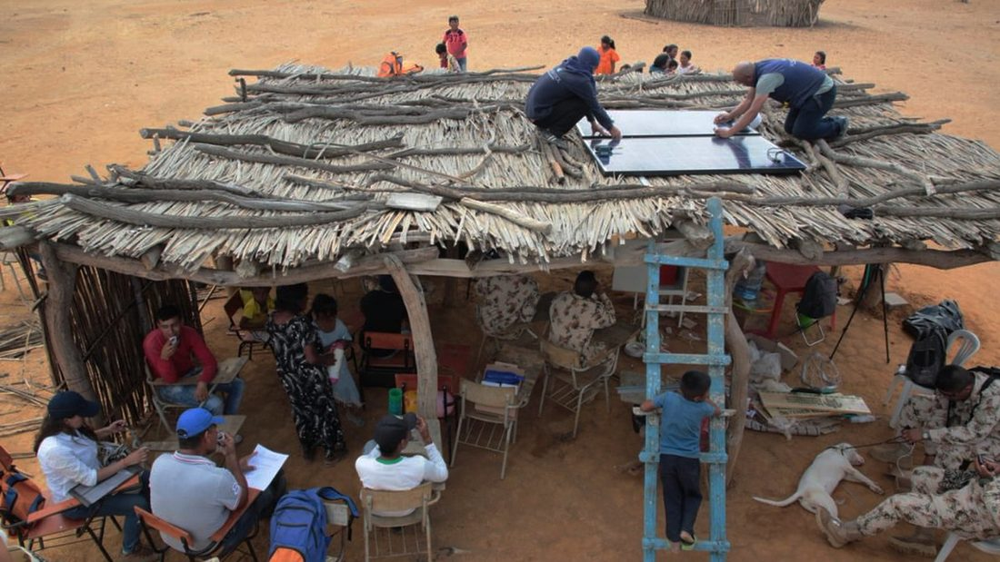
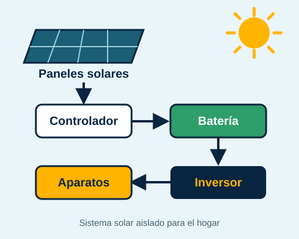

Qué es
Una plataforma web con una calculadora de energía solar para el hogar, que estima el consumo y sugiere el tamaño del sistema.
Introducción a la Ingeniería de Sistemas · Universidad de La Guajira
EnergíaGuajira es una propuesta de tecnología sostenible: una herramienta digital que ayuda a las familias y comunidades a calcular cuánta energía necesitan y qué sistema solar les convendría, aprovechando los recursos naturales de la región.
Objetivo: proponer una solución digital que apoye el acceso a energía limpia y confiable en comunidades de La Guajira.
Probar la calculadoraLa Guajira tiene uno de los mejores potenciales de sol y viento del país, pero muchas comunidades rurales, en especial rancherías wayuu, tienen acceso limitado a energía eléctrica o dependen de generadores a diésel, costosos y contaminantes. Además, las familias no cuentan con herramientas sencillas para saber cuánta energía usan ni qué sistema solar necesitarían.
¿Cómo puede una herramienta digital ayudar a las comunidades de La Guajira a dimensionar y adoptar energía solar para cubrir sus necesidades básicas?
Familias de zonas rurales, comunidades wayuu, escuelas y puestos de salud rurales, y pequeños negocios locales.
Energía limpia permite refrigerar alimentos, conservar el agua, estudiar de noche y cargar dispositivos, y reduce el gasto en combustible y la contaminación.
Una plataforma web con una calculadora de energía solar para el hogar, que estima el consumo y sugiere el tamaño del sistema.
La persona marca los aparatos que usa y las horas diarias. El sistema calcula el consumo y estima paneles, baterías y emisiones de CO₂ evitadas.
Traduce conceptos técnicos a resultados claros, está pensada para el celular y toma como base el potencial solar de La Guajira.
Marca los aparatos que usas y ajusta las horas por día.
Supuestos aproximados: 5,5 horas de sol pico al día, eficiencia del sistema de 75 %, batería para un día de autonomía con 80 % de descarga útil y un generador diésel de referencia de 0,7 kg CO₂ por kWh. El costo usa una tarifa de referencia de $936 por kWh (Air-e, consumo de noviembre de 2026), sin subsidios ni otros cobros de la factura, y cambia cada mes. Es una estimación educativa, no un diseño técnico final.
La solución se modela como un sistema con entradas, procesos y salidas que interactúa con su entorno.
Interfaz web, módulo de cálculo, base de datos de aparatos y supuestos técnicos, y módulo de resultados e infografía.
Comunidades y familias, empresas de energía, autoridades locales, el clima de la región y normas del sector eléctrico. La retroalimentación de los usuarios mejora los supuestos.




Se actualiza con los datos que ingreses en la calculadora.
Selecciona cada paso para ver cómo se aplicó en este proyecto.
Medidores y sensores inteligentes que registran la producción de los paneles y el consumo real del hogar.
Análisis de datos de radiación, viento y consumo para dimensionar mejor los sistemas en cada zona.
Modelos que predicen la demanda y la generación según el clima, y recomiendan cuándo usar la energía.
Almacenamiento y monitoreo remoto de muchos sistemas desde un solo panel.
Drones que inspeccionan paneles y aerogeneradores en zonas de difícil acceso.
Protección de los datos de consumo y de los sistemas conectados.
Conclusión: una herramienta digital sencilla puede ayudar a las comunidades a entender su consumo y a tomar decisiones sobre energía solar. Aplicar el pensamiento sistémico permitió ver la solución como un conjunto de partes conectadas con su entorno.
Docente: Ing. Mg. Rafael E. Griego Barros · Facultad de Ingeniería · Ingeniería de Sistemas